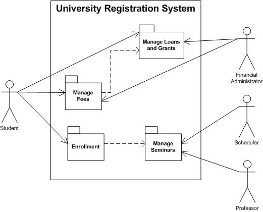
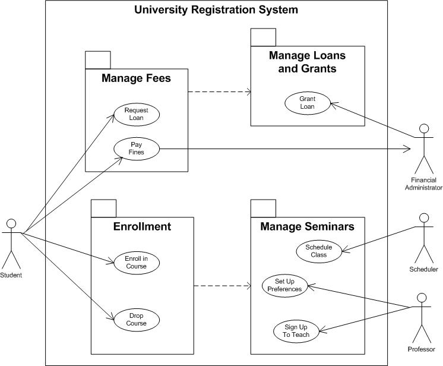
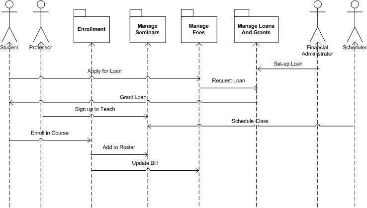

OUM |
Task Overview |
||
Method Navigation |
Current Page Navigation |
||
|
|
||||||||
The purpose of this task is to update the system’s Architecture Description (originally created with task RD.130) to add analysis level details that provide a high-level map of how the system will meet the functional requirements.
This update will take the form of the Conceptual View that, in the context of an implementation project, has a number of purposes, among them:
In a commercial off-the-shelf (COTS) application implementation employing a requirements-driven approach, the depth to which this task is performed typically depends on the extent to which the inclusion of a significant custom component (for example, Data Warehouse), large numbers of custom extensions or integration with multiple COTS or third-party systems leveraging Fusion Middleware, requires a reassessment of the standard application architecture. When this sort of architecturally-significant custom development impacts the standard application architecture, it is extremely important that this task be performed to guide the development and integration of custom components.
This task is not normally performed in a commercial-off-the-shelf (COTS) application implementation employing a solution-driven approach that seeks to minimize custom extensions by promoting leading practice use of standard functionality. Therefore, this task is not included in the pre-defined Solution-Driven Application Implementation View Work Breakdown Structure (WBS). However, if your solution-driven application implementation includes architecturally-significant custom extensions, you should include this task in your project.
In OUM, the Conceptual View takes the form of the Use Case Model updated to show use case packages and their interactions. By definition, a use case package is a collection of use cases, actors, relationships, diagrams, and other packages. Use case packages are used to structure the Use Case Model by dividing it into smaller parts. Use case packages may be used recursively, meaning that top-level use case package may, themselves, contain use case packages. The choice for the depth of this structure should be made based upon the size and complexity of the system being architected.
For example, a package diagram for a University Registration System may look like this:

However, there are many notations available to depict software architecture and there are no strict rules about what to include in this view. You should include whatever additional information that you deem appropriate to assist in ensuring the view accomplishes its purpose. Architects are encouraged to take advantage of evolving architectural standards and techniques that would enrich the contents of this view.
The Architecture Description work product is the collection point for all of the architectural views of the system. This artifact documents the system’s architecture through these architectural views and highlights the architecturally-significant aspects of the system by documenting the design and development priorities, as determined by an iterative examination of the implementation risks. A well-formulated Architecture Description is one of the key elements of the Lifecycle Architecture Milestone that concludes the Elaboration phase.
In this task, details will be added to the Architecture Description to:
The Architecture Description also becomes an index for:
This task is typically utilized on larger projects, but also should be considered when:
B.ACT.BSA Baseline Software Architecture
C.ACT.AC Analyze - Construction
Architecture Description
This work product provides a complete description of the system's architecture. It is a composite work product that is refined across these four tasks:
In this task, you add the Conceptual View to the work product. The Conceptual View further details the system’s architecture by grouping the use cases into logical groupings called packages, describing each of the packages, and describing the interactions between the packages through a sequence of flows.
You should follow these steps:
No. |
Task Step | Component | Component Description |
|---|---|---|---|
1 |
Review and structure the Use Case Model (RA.023). | None | Review each use case and partition them into logical groupings keeping "like-functionality: use cases together. |
2 |
Identify packages. | Package Diagram | Create packages for each logical grouping of use cases. |
3 |
Describe each package. | Package Description | For each package, identify a name, brief description, contained use cases, actors, relationships and other dependent packages. |
4 |
Inspect each package. | Package Diagram | Review each package and identify opportunities for reducing redundancy and maximizing cohesion among the use cases within the package. Also, look for problems with high coupling between use cases in “other” packages. |
5 |
Develop package-level sequence interactions. | Sequence Diagram | Choose analysis scenarios and create sequence diagrams that show how the actors and packages interact in a sequence of flows. |
When analyzing the requirements of the system, to enable the system to be mostly appropriately designed and implemented, it is important to partition the work into manageable pieces. If you are using a use case modeling approach, follow these steps to partition the system and describe the packages.
For more information regarding global analysis and architectural views and development approach, see Applied Software Architecture. For the purposes required by OUM, you may use the Use Case Model, with use case packages, and a sequence diagram showing the connections between the packages to describe this view.
The first step in structuring the Use Case Model is to understand the requirements that are common to more than one use case. Review each use case, taking notes of any commonality.
Use these notes (creating included, extended, and generalized use cases) to minimize redundancy. The goal is to make the requirements more understandable and easier to maintain, NOT to define a functional decomposition that is carried forward into the design.
Group use cases based on their functional similarities. For example, in an Order Management system, partition and group use cases that relate to Ordering, Shipping, and Accounting processes separately.
A model structured into smaller units is easier to understand. It is easier to show relationships among the model's main parts if you can express them in terms of packages. A package is either the top-level package of the model, or stereotyped as a use case package. You can also let the customer decide how to structure the main parts of the model.
If there are many use cases or actors, you can use use case packages to further structure the Use Case Model. A use case package contains a number of actors, use cases, their relationships, and other packages; thus, you can have multiple levels of use case packages (packages within packages).
The top-level package contains all top-level use case packages, all top-level actors, and all top-level use cases.
Identify packages (by name only) for each group of use cases that share similar functionality. Draw the package diagram and show the dependencies between each package.

Once the package diagram has been drawn, each package is described to sufficiently convey the role and purpose of the package. Here is the common section headings used to describe a package:
Name |
The name of the package |
|---|---|
Brief Description |
A brief description of the role and purpose of the package |
Use Cases |
The use cases directly contained in the package |
Actors |
The actors directly contain in the package |
Relationships |
The relationships directly contained in the package |
Diagrams |
The diagrams directly contained in the package. |
Use Case Packages |
The packages directly contained in the package. |
Each package is inspected to ensure it complies with good principles of functional separation. Even though these are “analysis” packages, they often become design components in later steps, so it is important that they follow the rules of high cohesion (within the package) and low coupling (between the packages).
Here are some general guidelines when inspecting packages:
Another important architectural aspect of a system is the sequence of steps and the flow of control between actors and packages. One of the best approaches for defining these interactions is with a sequence diagram. Scenarios are chosen based on business processes and a sequence diagram is drawn to graphically depict the collaboration between the actor’s and the packages within the system. Here is an example of a sequence diagram which depicts the interaction between a student, a professor, a financial administrator, a scheduler and the University Registration System:

This task involves the following method roles:
Role |
Responsibility |
% |
|---|---|---|
System Architect |
Lead the development of the updated Architecture Description. Participate in definition and review of the Architecture Description. | 80 |
Developer |
Participate in definition and review of the Architecture Description. | 20 |
* Participation level not estimated.
You need the following for this task:
Prerequisite |
Usage |
|---|---|
Use Case Model (RA.023) |
The Use Case Model provides the graphical view of the use cases. |
Use Case Specification (RA.024) |
The Use Case Specification provides the detailed description of the use cases. |
Architecture Description |
The current state of the Architecture Description (originially created during task RD.130) work product that includes the High-Level Software Architecture (RA.035) and related materials is used as the starting point to create the Conceptual View. |
Prerequisite |
Usage |
|---|---|
Architecture Description |
The current version of the Architecture Description work product that includes the initial Analysis Architecture Description and the latest updates to the High-Level Software Architecture (RA.035) serves as input to the final version. |
The following templates and tools are available to assist with this task:
Template File Name |
Comments |
|---|---|
Architecture Description |
MS WORD - Add the Conceptual View to the Architecture Description work product originally created in Develop Baseline Architecture Description (RD.130). |
This section is not yet available.
Although it might seem desirable to strive to achieve the highest levels of precision and consistency for a standard such as an Architecture Description, it is not necessarily the case. To assist rapid development and provide a practical standard that can be readily adopted by a wide range of people in development projects, a high-level view is all that is needed.
One objective is to define an Architecture Description just to the point to enable consistent definition and use by practitioners and to underpin the architectural aspects of the project. Another, related objective is to provide a consistent base of concepts, terms, and notations for the architects to use as input into their design.
Such a specification does not have to be comprehensive to be effective. It only needs to cover the core areas of the architecture that must be defined and understood in a standard way to enable effective design.
Although underlying precision and consistency are important (and will be achieved through additional tasks), practicality and usability are paramount. The critical factor for success is whether the resulting set of concepts, terms, and notations is small, simple, and accessible enough to be understood.

Copyright © 2006, 2016, Oracle and/or its affiliates. All rights reserved.